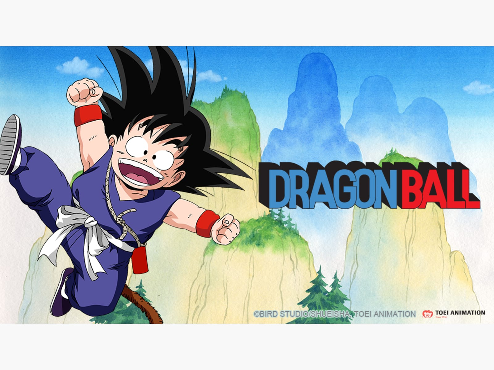

Dragon Ball
A Dragon Ball japán mangasorozat, amelyet Torijama Akira alkotott meg. A sorozat a Weekly Shounen Jump magazinban jelent meg 1984-től 1995-ig. Később egy 42 kötetet magában foglaló könyvsorozatban újranyomták (tankóbon). 2004-ben a manga újra megjelent 34 kötetben (kanzenban).
2000-ben az Egyesült Államokban a manga két képregény-sorozatban jelent meg: ez a Dragon Ball és a Dragon Ball Z volt. A képregények nem váltották be a hozzájuk fűzött reményt, köszönhetően a magas nyomdai költségeknek (2,95 dollár kettő, majd három fejezetért) és a hosszú történetnek. 2003-ban mindkét sorozat kiadását felfüggesztették. A Dragon Ball Z-t az induló Shounen Jump amerikai változatában folytatták, 2003 januárjától. Ezzel párhuzamban a Viz Media kiadta mind a 42 kötetet angolul. A Viz Media átnevezte a manga második részét Dragon Ball Z-re, hogy csökkentsék a zűrzavart Észak-Amerikában. A sorozatot az Egyesült Királyságban a Gollancz Manga adta ki.
A Dragon Ball a kis Son Goku életét követi nyomon. A gyerekkori kalandoktól kezdve egészen odáig, míg nagyapa nem lesz. Kalandjai során rengeteget harcol és végül a világ legerősebb harcművésze lesz. Son Goku nincs egyedül kalandjai során, rengeteg barát és ellenség viszi előrébb a történet fonalát.
A híres sárkánygömbök (Dragon Ball) sokszor hosszabb ideig töltenek be fontos szerepet az animében, azonban nem mindig játszanak szerepet a történet alakulásában. A hét darab sárkánygömb szétszórva található a világban. Amikor összegyűjtik azokat, megidézhető lesz Shenlong, a sárkány, aki teljesít egy kívánságot, amennyiben hatalmában áll. Miután teljesül a kívánság, a sárkánygömbök újra szétszóródnak a világban és egy évig nem lehet őket újra használni. A múltban akár több generációnak is le kellett áldoznia, hogy a hét gömböt valaki összegyűjtse. Azonban egy 16 éves lánynak, Bulmának sikerül készítenie egy „sárkányradart”, hogy könnyebben megtalálják a gömböket